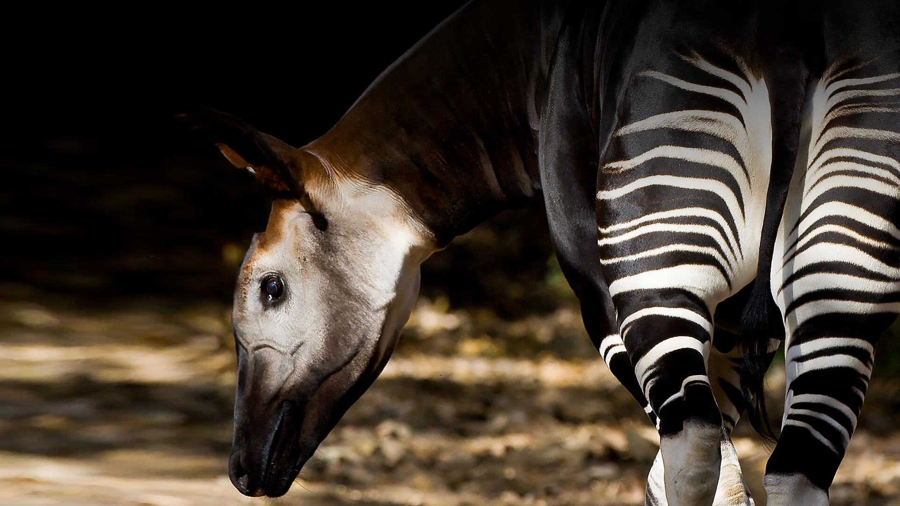
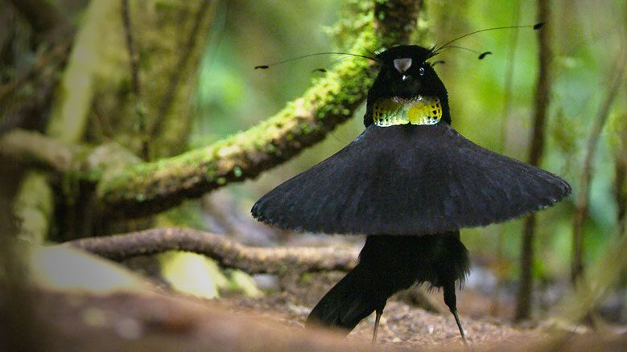
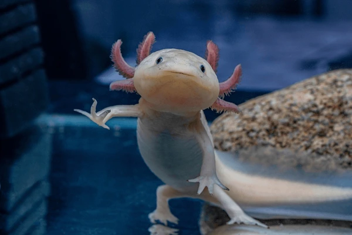
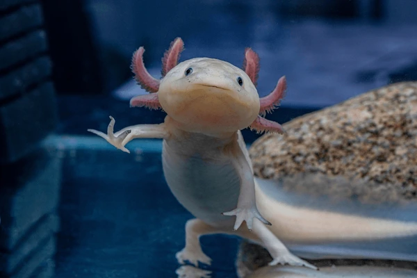
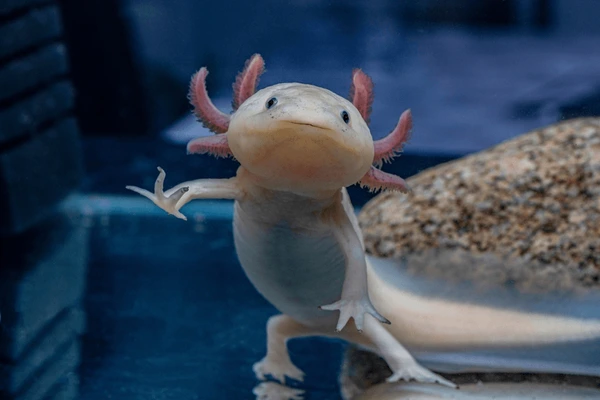
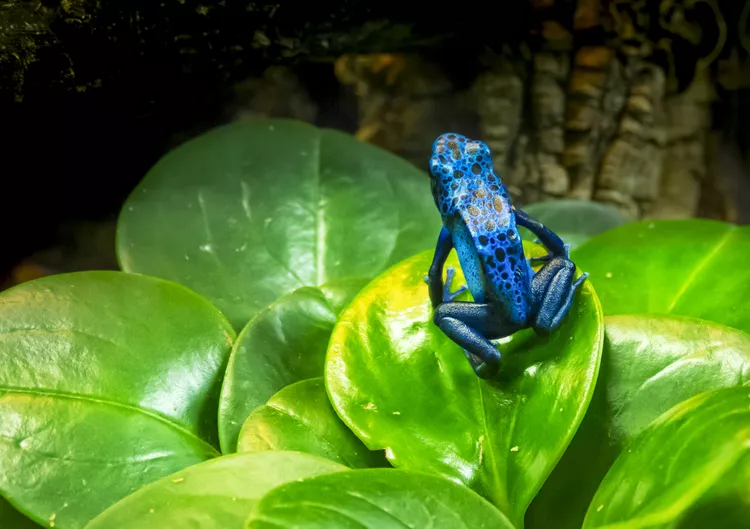
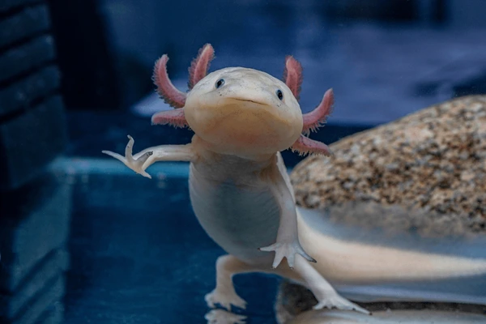

Get to know more...


 



"The blue poison dart frog (Dendrobates tinctorius) is found in southern Suriname and portions of Brazil. Though all the members of this species are a brilliant blue color, the black spots are unique to each individual.These frogs contain enough poison to cause harm or death in humans. "Blue Poison Arrow Frog - Denver Zoo". Denver Zoo. Like most other poison frog species, they lose their toxicity in captivity as a result of an altered diet. Blue poison dart frogs are also popular pets."
Blue Poison Dart Frog

Importance to protect all species
Species and their populations are the building blocks of ecosystems, individually and collectively securing the conditions for life. They provide food, medicine and raw materials. They are the basis of soil formation, decomposition, water filtration and flow, pollination, pest control and climate regulation.